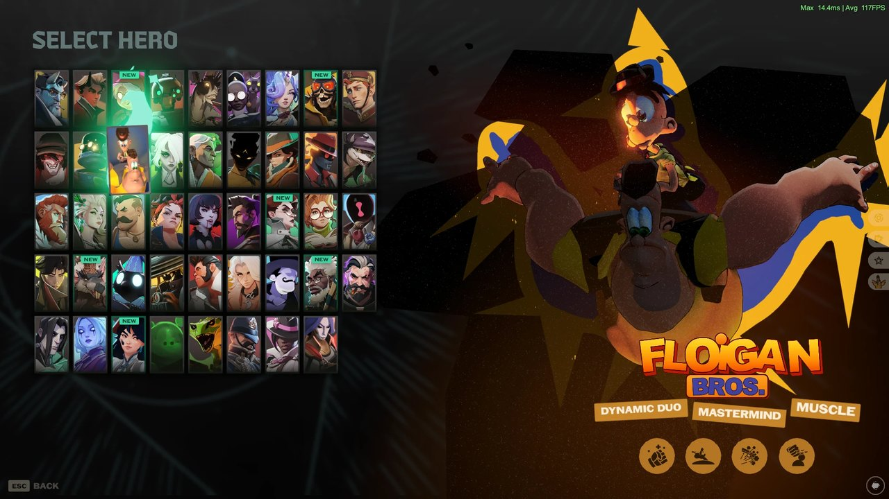
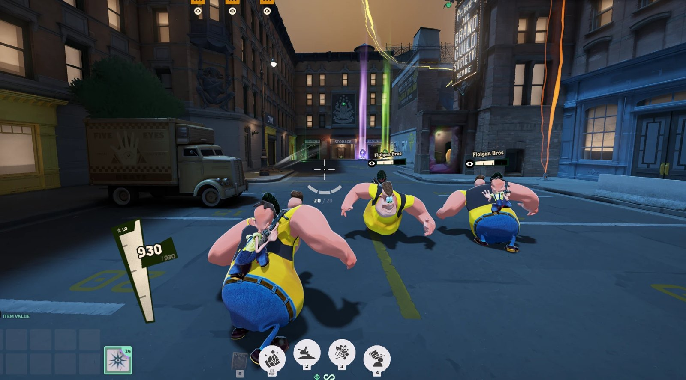
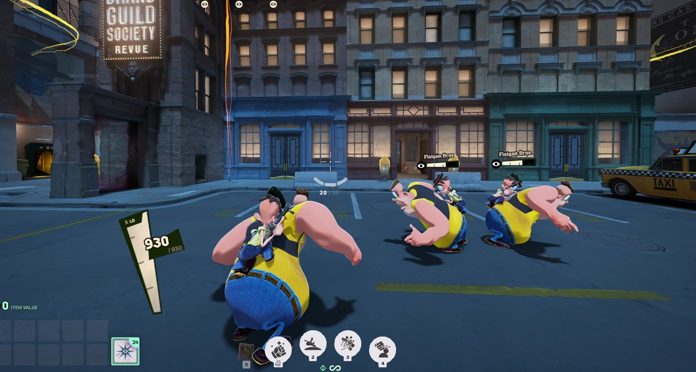
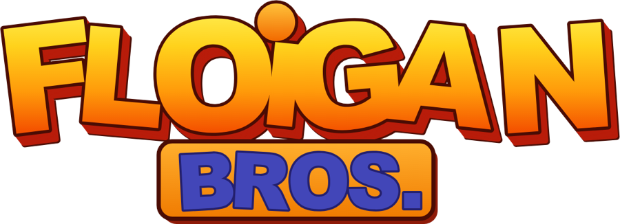

Hoigle and Moigle in Deadlock



Description

Hoigle and Moigle from the Dreamcast game Floigan Bros. (2001), fully replacing Mo & Krill.
Models
- Moigle replaces Mo, and Hoigle rides on his back in Krill's place
- Ripped from the original game: the brothers' models and textures from the Dreamcast disc
- Hoigle keeps Krill's gun
Abilities (new names and icons)
- Taunt!
- Hide and Seek
- Smoke Toss
- Tag!
Dizzy birds: in the main version, every stun shows Moigle's dizzy birds over the stunned hero instead of the stun stars.
Voice and sounds
- The brothers' own voice lines from the game, picked for every voice event
- Original Floigan Bros. sound effects on Taunt! and Hide and Seek
Menus
- FLOIGAN BROS. name logo in the style of the game's cover
- New hero portraits, hero-grid tile and hero-select pose
- Hero tags: Dynamic Duo / Mastermind / Muscle
- All text says Hoigle and Moigle
Install
Add the VPK with your mod manager, or copy it into Deadlock/game/citadel/addons/ as a free pakXX_dir.vpk.
Client-side only: you see the Floigan Bros., other players still see Mo & Krill.
It ships the full English hero text file, so it can clash with other mods that change hero text. After a game patch the text files may need an update.